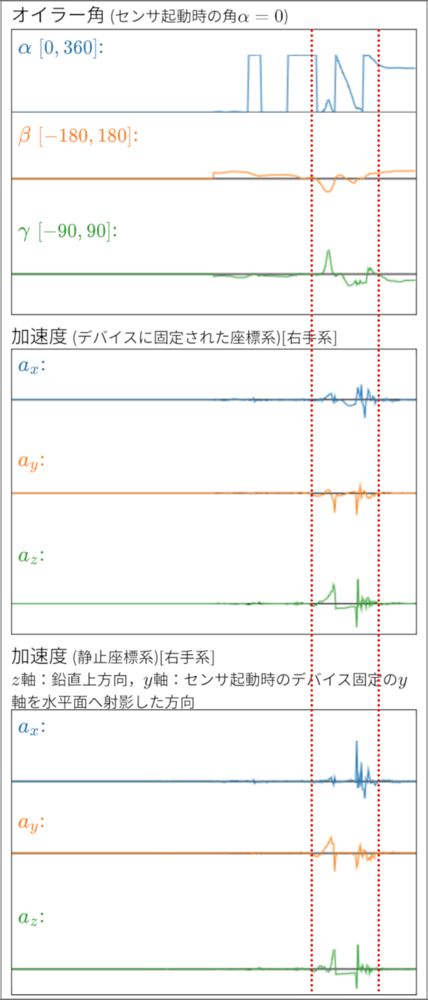
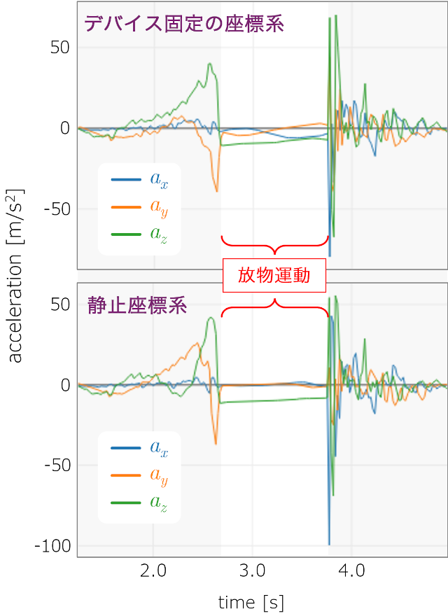
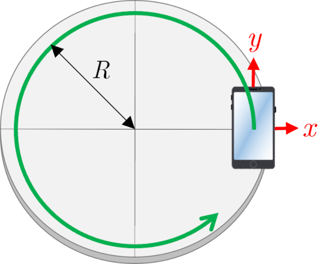
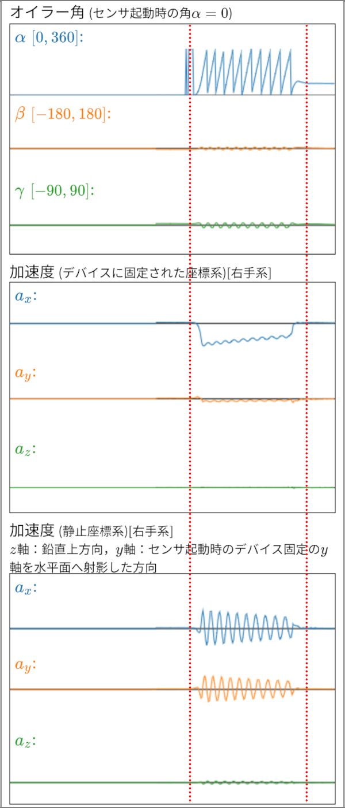
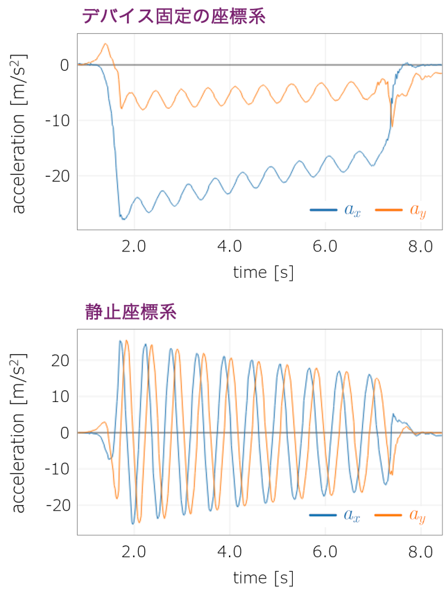

■ 測定例
- 放物運動
スマートフォンを斜方投射したときの測定画面と，測定画面において赤点線で挟まれた時間領域の加速度のグラフ（上：デバイスに固定された座標系での加速度，下：静止座標系での加速度）を示す．
測定画面

加速度のグラフ

放物運動の前後で加速度が急激に変化しているのは，投射したときの力による加速度とキャッチしたときの衝撃による加速度を表している．
空気の影響などを無視すると，地表付近で放物運動している物体には鉛直下向きに一定の重力加速度が生じる．測定画面のオイラー角のデータから分かるように，放物運動している間，スマートフォンは回転している．そのため，デバイス固定の座標系では鉛直方向が時々刻々変化し，デバイス固定の座標系での加速度の$x$,$y$,$z$成分は有限な値で変化している．しかし，静止座標系での加速度は$z$成分（鉛直方向成分）のみがほぼ一定の値(おおよそ$-9.8\ {\rm m/s^2}$)を示し，$x$,$y$成分の値はほぼゼロとなっている．
- 回転運動
図に示すような回転台に，デバイス固定の$x$軸と$y$軸がそれぞれ動径方向と接線方向を向くようにスマートフォンを固定して回転運動させる．静止状態から力を加えて回転を開始し，数回転してから停止させるまでの測定画面と，測定画面において赤点線で挟まれた時間領域の加速度の$xy$成分（水平方向成分）のグラフ（上：デバイスに固定された座標系での加速度，下：静止座標系での加速度）を示す．
測定画面

加速度のグラフ

デバイス固定の座標系における加速度の$x$成分は向心加速度，$y$成分は接線加速度に対応している．回転台の摩擦により回転は徐々に減衰していくため，接線方向に負の加速度が生じている．また，向心加速度の大きさは徐々に減少している様子が分かる．静止座標系における加速度の$x$, $y$成分は，互いに位相が$\pi/2$ずれた正弦曲線（Sinカーブ）を示しており，回転運動でよく知られた加速度の様子を表している．ただし，摩擦による減衰のため加速度は徐々に減少している．